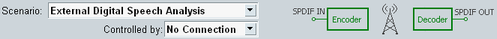
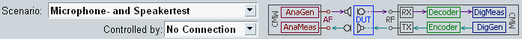
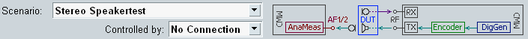
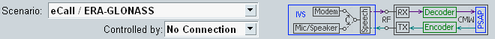

Selecting a scenario at the top of the main view is the first step when configuring the audio application. The available scenarios are briefly described below. For more details, see "Test Setups".
Stereo scenarios use both audio software instances. If you select a stereo scenario in one instance, the same scenario is automatically selected in the other instance and the speech analysis settings of the two instances are coupled.
The scenario provides an analog audio generator, a digital audio generator, an analog audio measurement and a digital audio measurement.
You can generate an audio test signal via one of the generators, pass the signal through the DUT and analyze the resulting audio signal with one of the measurements.
The DUT is connected to the instrument via AF or SPDIF audio connectors.
Remote command:There are four external speech analysis scenarios, for mono and stereo, analog and digital audio signals.
The scenarios are intended for the external analysis of the speech quality of the DUT, for example a mobile phone, a Bluetooth headset or Bluetooth headphones.

The audio board of the R&S CMW must be equipped with a speech codec (R&S CMW-B405A). If no speech codec is available, the scenarios are grayed out.
An external audio analyzer like the R&S UPV is required to generate and analyze the audio test signal. It is connected to the R&S CMW via the AF connectors (analog scenarios) or SPDIF connectors (digital scenarios). If supported by the external audio analyzer, it is recommended to use the digital interface and scenarios. An R&S CMW signaling application controls an RF speech connection to the DUT.
A speech quality test of the microphone path uses an audio test signal fed to the DUT microphone and analyzes the audio signal returned via the RF uplink connection.
A speech quality test of the speaker path uses an audio test signal transmitted via the RF downlink connection and analyzes the audio signal of the DUT speaker.
Remote command:This scenario is intended for tests of the microphone and speaker of a mobile phone. The scenario supports audio tests using the internal audio generators and audio measurements (not speech quality analysis).

The audio board of the R&S CMW must be equipped with a speech codec (R&S CMW-B405A). If no speech codec is available, the scenario is grayed out.
The DUT is connected to the R&S CMW via an RF speech connection, controlled by a signaling application. The microphone and speaker of the DUT are connected to the AF connectors of the R&S CMW, via electrical or acoustical coupling.
A microphone test uses the analog generator and the digital measurement. The test signal is fed to the DUT microphone and returned via the RF uplink connection.
A speaker test uses the digital generator and the analog measurement. The test signal is transmitted via the RF downlink connection and returned via the DUT speaker.
Remote command:This scenario is intended for tests of the stereo speakers of a DUT, for example of Bluetooth headphones. The scenario supports audio tests using the internal audio generators and audio measurements (not speech quality analysis).

The audio board of the R&S CMW must be equipped with a speech codec (R&S CMW-B405A). If no speech codec is available, the scenario is grayed out.
The DUT is connected to the R&S CMW via an RF speech connection, controlled by a signaling application. The speakers of the DUT are connected to the AF connectors of the R&S CMW, via electrical or acoustical coupling.
The speaker test uses the digital generator and the analog measurement. The test signal is transmitted via the RF downlink connection and returned via the DUT speaker.
Remote command:This scenario is used by the software options R&S CMW-KA09x. The related test software activates the scenario, configures all settings and controls the measurements. You cannot use the scenario standalone, without the test software. For operating instructions, refer to the documentation of the R&S CMW-KA09x test software.
This scenario is only supported by the audio software instance 1.

This scenario allows you to play or record an audio waveform file.
If you play an audio file, you can route the generated audio signal to an audio output connector or to a speech encoder.
If you record an audio file, you can use the audio input connectors or a speech decoder as signal source.
Remote command:The following commands query which scenario is active and which master applications are available.
Remote command: